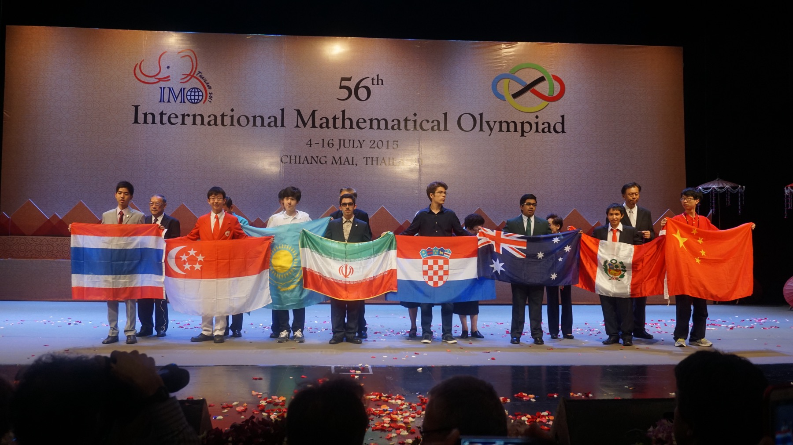
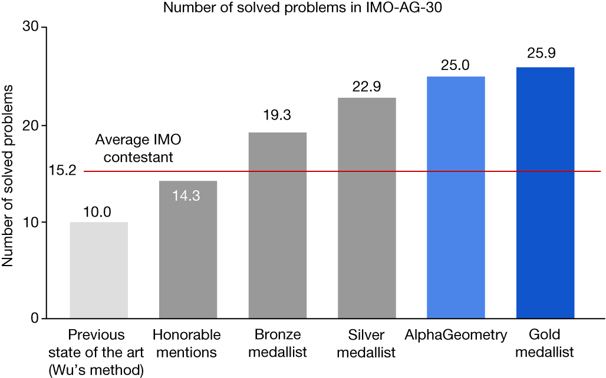
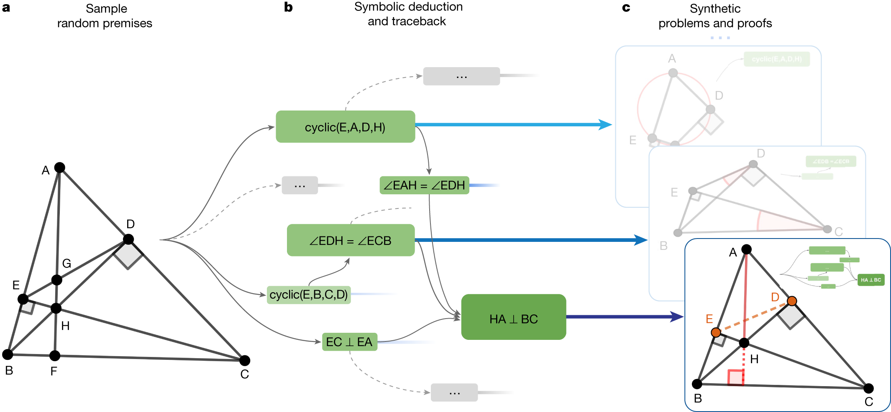

¿Qué hace el modelo de lenguaje y qué hace el motor simbólico?


Trinh, T. H., Wu, Y., Le, Q. V., He, H. y Luong, T. (2024). Solving olympiad geometry without human demonstrations. Nature 625, 476–482.
Google DeepMind y Universidad de Nueva York · acceso abierto, CC BY 4.0
Un sistema que resuelve problemas de geometría de las olimpiadas de matemáticas combinando las dos formas de razonar de hoy.
Casi al nivel de un medallista de oro, sin demostraciones humanas

- AlphaGeometry: 25 de 30 problemas de geometría de las olimpiadas desde el año 2000
- Mejor método anterior: 10. Mejor referencia del artículo: 18
- GPT-4 escribiendo la prueba completa: 0
- Medallista de oro promedio: 25,9
El motor deduce; el modelo propone construcciones

- El motor simbólico deduce todo lo que puede desde las premisas
- Si no llega a la conclusión, el modelo de lenguaje propone un punto auxiliar
- El motor vuelve a deducir; el ciclo sigue hasta encontrar la prueba
100 millones de teoremas sintéticos

- Casi 1000 millones de premisas al azar
- El motor simbólico deduce y guarda 100 millones de teoremas con su prueba
- Unos 10 millones de pasos construyen puntos auxiliares: de ahí aprende el modelo
- Ni un problema ni una prueba escritos por personas
Los matices que señala el propio artículo
La comparación con personas es aproximada
El puntaje humano, de 0 a 7, se reescala; y las personas leen el enunciado, no una traducción a un lenguaje especial
No toda la geometría cabe
Solo el 75 % de los problemas de geometría no combinatoria se pudo representar; las desigualdades quedan fuera
Pruebas legibles
Expertos revisaron las soluciones, y el rastreo halló una versión más general de un problema de 2004
Preguntas para la discusión
- En AlphaGeometry, ¿quién genera y quién verifica? ¿Y quién generaba y quién verificaba en su sesión de vibe coding del Laboratorio 3A?Conecta con el Laboratorio 3A
- El sistema se entrenó sin una sola demostración humana. ¿Qué hizo posible fabricar 100 millones de ejemplos correctos? ¿Se podría hacer algo así con las políticas del Laboratorio 3B?Conecta con el Laboratorio 3B
- Con la guía de decisión de la charla de cierre: ¿en qué problema de su organización tendría sentido un sistema que combine las dos formas de razonar, y dónde sería excesivo?Conecta con el proyecto integrador
Hasta la sesión 4
Lectura: Radford et al. (2021), CLIP. Trabajos independientes y paso del proyecto: al inicio de la semana 3.
Para profundizar
- Trinh, T. H., Wu, Y., Le, Q. V., He, H. y Luong, T. (2024). Solving olympiad geometry without human demonstrations. Nature 625, 476–482. DOI: 10.1038/s41586-023-06747-5 · acceso abierto, CC BY 4.0
- Google DeepMind. Código y modelo de AlphaGeometry. github.com/google-deepmind/alphageometry